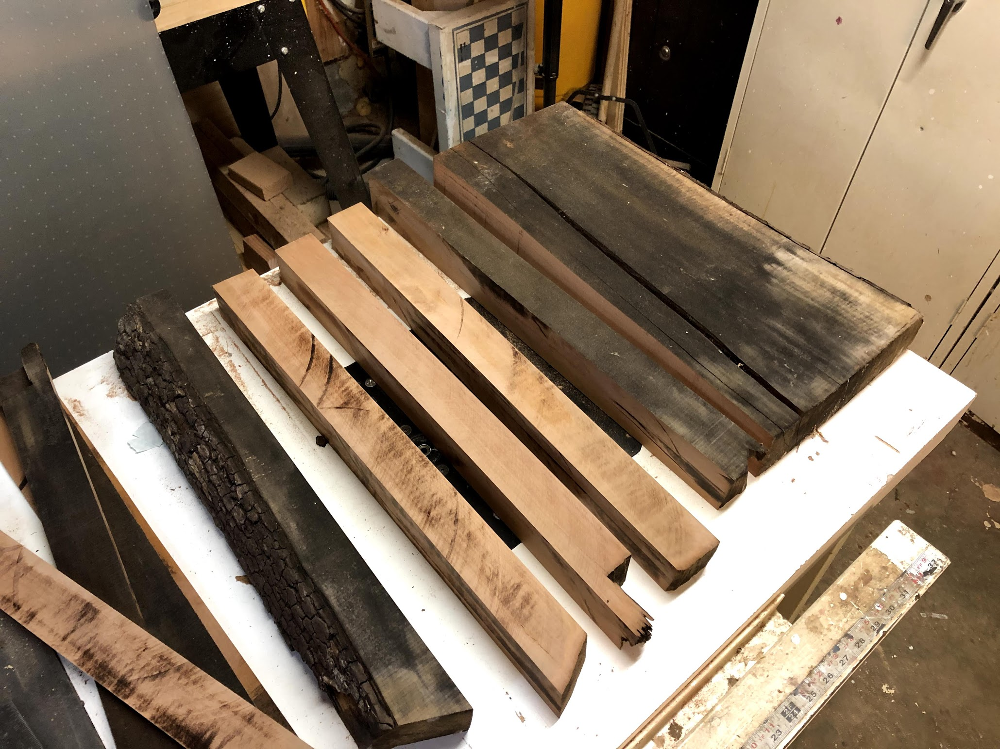

custom monitor stand:
designed & built in 4 hours
i have a 32" ultra-wide 4k monitor that will now sit on my desk instead of being mounted to the wall. the designs needed to be stable, though the monitor isn't terribly heavy and it won't be interacted with often.
a few things i kept in mind - the center of gravity of the screen / base system, the available space on my desk, and the constant tension on the joints.
a few things i kept in mind - the center of gravity of the screen / base system, the available space on my desk, and the constant tension on the joints.
this first option had a decent amount of my own style, as well as an added clamp that secures this stand to any desk with at least 2" of lip.
at 2" x 2" stock for the beams, this stand seemed a bit heavy. the clamp was a nice idea though to keep the footprint smaller and have the screen be stable.
at 2" x 2" stock for the beams, this stand seemed a bit heavy. the clamp was a nice idea though to keep the footprint smaller and have the screen be stable.
the second option, the one i am now building, uses 1.5" x 1.5" stock. i went with a slightly wider base and pushed the screen back toward the center of gravity.
again the consideration for the joints comes into play here. i'm going to try to use a hardwood, glue, and two pins or a spline through the joints. should be fun!
again the consideration for the joints comes into play here. i'm going to try to use a hardwood, glue, and two pins or a spline through the joints. should be fun!

having a design and left over 10/4" stock, i was able to rapidly prototype this monitor stand and find the best way to pin everything together.
on one hand, using only 30°, 45°, and one 52° angles made making custom pocket hole jigs a lot easier. however there is a significant amount of skill involved in using a single jig and some alignment marks to accurately produce the correctly placed hole with a pin.
on one hand, using only 30°, 45°, and one 52° angles made making custom pocket hole jigs a lot easier. however there is a significant amount of skill involved in using a single jig and some alignment marks to accurately produce the correctly placed hole with a pin.
and a prototype is born! i can now mount my monitor and use my desktop tower along side my laptop. this was a great first draft of a product and i can already see areas on which to improve.
apart from the clearly-not-black-walnut construction, some other key take-aways from this are:
- make better jigs for dowel pin location
- wood stock can be sized down to 1.5", 2" is overkill
- label which piece is goes where to alleviate the headache of drilling the wrong holes..
apart from the clearly-not-black-walnut construction, some other key take-aways from this are:
- make better jigs for dowel pin location
- wood stock can be sized down to 1.5", 2" is overkill
- label which piece is goes where to alleviate the headache of drilling the wrong holes..